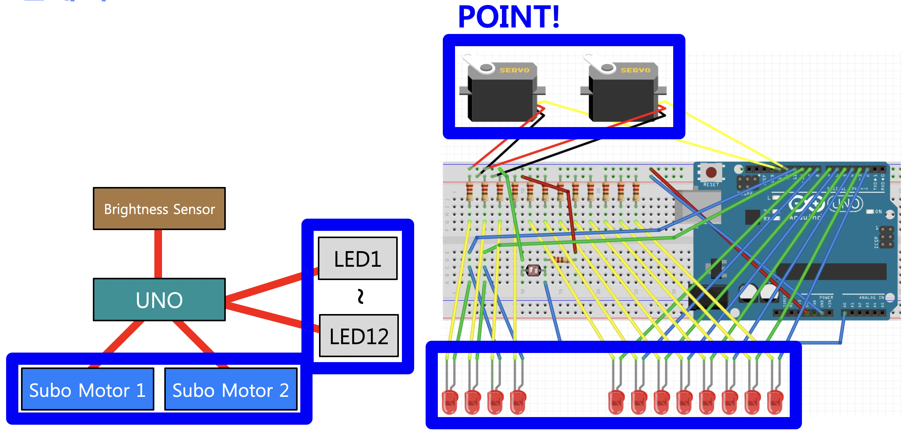
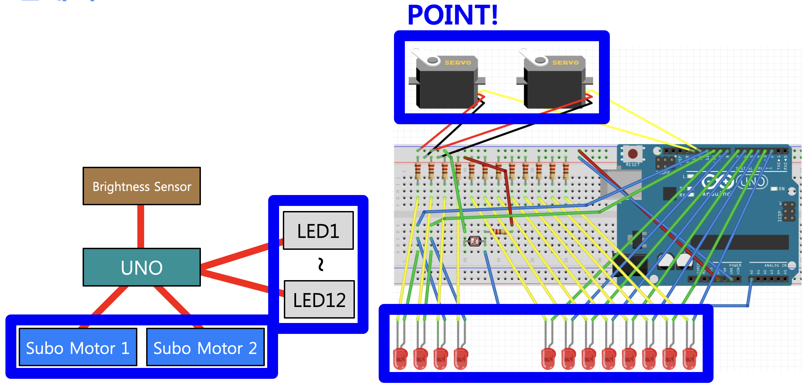

구현 기능

|
LED 발광 기능 무대 근처에 있는 LED와 위에 달려 있는 LED가 반짝반짝 빛납니다. |

|
밝기 감지 기능 밝은지 어두운지에 따라 LED가 반짝이는 방식이 달라집니다. 어두울 때 LED가 많이 반짝입니다. |

|
모터 작동 기능 어두우면 LED가 반짝이면서 모터가 작동되므로 움직이는 LED가 됩니다. |
배경과 목적
컴퓨터시스템입문 수업 시간에 Arduino로 작품을 만드는 과제가 있었습니다. 최대한 창의적인 작품을 만들기 위해 제작하게 되었습니다.
컴퓨터시스템입문 수업 시간에 Arduino로 작품을 만드는 과제가 있었습니다. 최대한 창의적인 작품을 만들기 위해 제작하게 되었습니다.
배운 점
- Arduino로 하드웨어를 설계하고 구현하는 법을 알게 되었습니다.
- LED, 밝기 센서, 서보 모터를 활용하는 법을 알게 되었습니다.
- Arduino로 폴링 방식을 구현하는 법과, 폴링 방식과 인터럽트 방식의 차이를 알 수 있었습니다.
진행 절차
- Arduino 프로그래밍을 하기 전에 박스, 테이프, 나무젓가락 등을 이용해서 스테이지 모형부터 구현하였습니다.
- LED, 밝기 센서, 서보 모터의 각 예제 프로그램을 강의 자료에서 찾았고 원하는 대로 수정해서 하나로 합쳤습니다.
- 폴링 방식을 사용해서 밝기가 어두운지 밝은지에 따라 다르게 동작하도록 하였습니다.
- 약간의 시행 착오는 있었지만 코드를 면밀히 확인한 후 수정하였습니다.
- 이렇게 해서 원하는 프로그램을 구현할 수 있었습니다.
역량 강화를 위해 가장 노력한 점
Arduino로 창의적인 작품 제작
Arduino로 창의적인 작품 제작
전체 구조


사용 기술
Arduino
Arduino
개발 환경
Arduino IDE
Arduino IDE